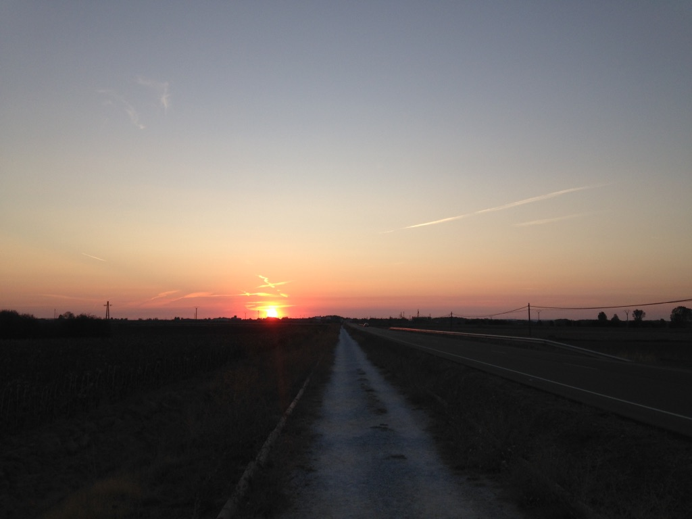

Each and every day I wake and walk with the sun.
It starts low, climbing over hillsides, rising slowly.
It finds its temporary place amid the sky
and begins to color the Meseta.
Front and center a shadow grows.
It looks at me with indifference – a mirror of my darker side.
Fear, insecurity, doubt,
The manifestation of my inner demons.
Each and every day, I wake and walk and confront them.
If I fight and struggle, I hurt and suffer.
If I push them away, I push myself away.
I cannot hide, I cannot run,
I can only bear witness.
Salvation lies within absence.
But do I do it? Do I dare eclipse the sun?
To turn from the shadows is to turn from truth.
I would be swallowed whole.
My shadow is here,
my shadow is me.
So long as I walk the Way,
it will keep me company.
I can’t be scared
I mustn’t be afraid.
I must continue on and on and on,
moving toward the falling sun.
Each and every day, I wake and walk towards Santiago.
The closer I get, the lighter I feel.
The sun hangs low, peering over hillsides, descending slowly.
Color fades from the Meseta, and my shadow is behind me.
Westward lies Santiago, and I look.
The sun has set, the dark has settled.
A fire begins to grow deep inside.
It lights the valley and shows me the Way.
I wake and walk toward the Light,
closer and closer to Santiago.
